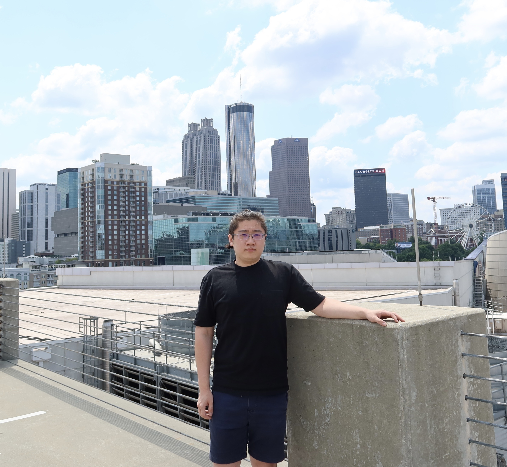

|  | PhD Candidate |
Yongxu Zhang is a PhD candidate in Yale Biomedical Engineering Department and Center for Neurocomputation and Machine Intelligence
under the supervision of Professor Shreya Saxena.
He received his M.S. in Electircal and Computer Engineering from University of Florida in 2021, and
B.S. in Physics from Nankai Univerisity in 2018.
His research interests include computational neuroscience and deep learning application.
I am on the job market now and I will be graduating after summer 2025. I am looking for jobs in both academia and industry, please contact me if you have any opportunities of internship or full-time jobs.
One work accepted to IEEE TNSRE’25!
One work accepted to NeurIPS’24!
One work accepted to COSYNE’24!
Ph.D. in Biomedical Engineering (AI for Neuroscience), 2021 - Dec. 2025 (Expected)
M.S. in Electrical and Computer Engineering (Signal Processing and Machine Learning), Aug. 2019 - May. 2021.
B.S. in Physics, Sep. 2014 - Jun. 2018.
[IEEE TNSRE 2025]Yongxu Zhang, Catalin Mitelut, David J Arpin, David Vaillancourt, Timothy H Murphy, and Shreya Saxena,
Behavioral Classification of Sequential Neural Activity Using Time Varying Recurrent Neural Networks.
IEEE Transactions on Neural Systems and Rehabilitation Engineering 2025
(IEEE TNSRE 2025).
[NeurIPS 2024]Yongxu Zhang, and Shreya Saxena,
Inference of Neural Dynamics using Switching Recurrent Neural Networks.
38th Conference on Neural Information Processing Systems
(NeurIPS 2024).
[Book Chapter]Yongxu Zhang, and Shreya Saxena,
Analysis of Mesoscope Imaging Data.
Springer US, 2025. 29-49 (Book Chapter in 'Awake Behaving Mesoscopic Brain Imaging').
[NeurIPS 2022 Workshop on Robustness]Yongxu Zhang, and Shreya Saxena,
Behavioral Classification of Sequential Neural Activity Using Time Varying Recurrent Neural Networks.
Workshop on Robustness in Sequence Modeling, 36th Conference on Neural Information Processing Systems
(NeurIPS 2022 Workshop on Robustness in Sequence Modeling).
[eLife] Catalin Mitelut, Yongxu Zhang, Yuki Sekino, Jamie D Boyd, Federico Bollanos, Nicholas V Swindale, Greg Silasi, Shreya Saxena, and Timothy H Murphy,
Mesoscale cortex-wide neural dynamics predict self-initiated actions in mice several seconds prior to movement.
(Elife 2022).
[EMBC 2021]Yongxu Zhang, Catalin Mitelut, Greg Silasi, Federico Bolanos, Nicholas Swindale, Timothy Murphy, and Shreya Saxena,
Uncovering the effect of different brain regions on behavioral classification using recurrent neural networks.
2021 43rd Annual International Conference of the IEEE Engineering in Medicine & Biology Society (EMBC 2021).
EEL 5840 Fundamentals of Machine Learning